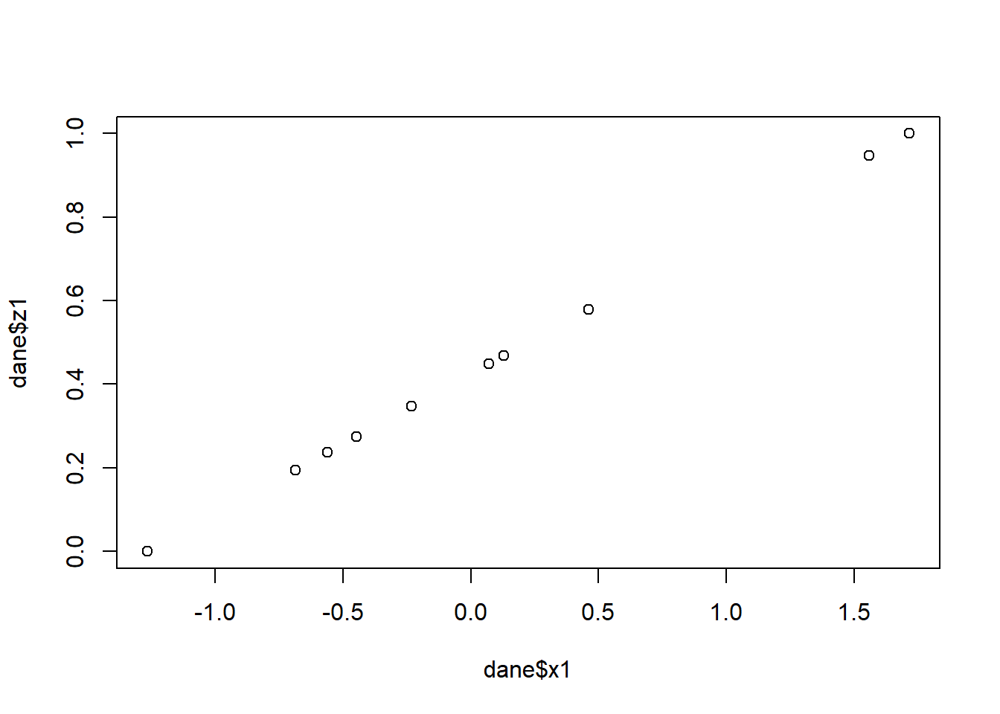

W odróżnieniu od treści prezentowanych w poprzednich rozdziałach, w tym nie będziemy korzystać z zewnętrznych pakietów. Zagadnienia związane z tworzeniem własnych funkcji oraz modyfikacją przepływu sterowania będą od nas wymagały poznania wielu różnych operatorów wbudowanych w bazowe pakiety R.
W rozdziale skorzystamy ze sztucznie wygenerowanego zbioru danych:
Funkcję ograniczają potrzebę kopiowania kodu i ułatwiają wprowadzanie zmian. Zamiast dodawać komentarze do dużej ilości kodu można opakować go w funkcję, co ułatwi zrozumienie programu. Jeśli istnieje potrzeba wprowadzenia zmian to wystarczy zrobić to w jednym miejscu.
Stworzenie funkcji wymaga:
wymyślenia nazwy funkcji,
określenia elementów wejściowych,
umieszczenia kodu w ciele funkcji.
Istnieją pewne dobre praktyki tworzenia funkcji:
nazwy funkcji powinny być czasownikami,
podkreślnik vs. notacja camelCase i konsekwencja stosowania,
wspólny przedrostek np. rnorm, runif.
Podstawowa składnia definiowania funkcji w R:
nazwa_funkcji <-function(argument1, argument2, ...) {# ciało funkcji - zbiór instrukcji# zwracana wartośćreturn(wynik)}
Przykład prostej funkcji, która oblicza wskaźnik będący stosunkiem średniej do odchylenia standardowego:
W R można definiować funkcje na kilka sposobów, które różnią się składnią, ale działają identycznie:
# Sposób 1 - pełna składnia z nawiasami klamrowymi i returnnormalize <-function(x) {return((x -min(x)) / (max(x) -min(x)))}# Sposób 2 - bez jawnego returnnormalize <-function(x) { (x -min(x)) / (max(x) -min(x))}# Sposób 3 - skrócona składnia, bez klamrnormalize <-function(x) (x -min(x)) / (max(x) -min(x))# Sposób 4 - nowoczesna składnia od R 4.1 z operatorem \()normalize <- \(x) (x -min(x)) / (max(x) -min(x))
W każdym z powyższych przypadków funkcja robi to samo - normalizuje wartości wektora do przedziału [0, 1].
Funkcje najlepiej tworzyć, gdy: - Powtarzamy ten sam fragment kodu wielokrotnie - Chcemy uporządkować logicznie kod - Chcemy stworzyć narzędzie wielokrotnego użytku
Przykład zastosowania funkcji do normalizacji danych:
# Zastosowanie funkcji normalize dla każdej kolumnydane$z1 <-normalize(dane$x1)dane$z2 <-normalize(dane$x2)dane$z3 <-normalize(dane$x3)dane$z4 <-normalize(dane$x4)# Wizualizacja efektu normalizacjiplot(dane$x1, dane$z1)

5.3 Instrukcje warunkowe
Za pomocą instrukcji if możemy warunkowo wykonywać kod. Ogólna postać jest następująca:
Podstawowa składnia:
if (warunek) {# kod wykonywany, gdy warunek jest TRUE} else {# kod wykonywany, gdy warunek jest FALSE}
Rozszerzona składnia if-else if-else:
if (warunek1) {# kod wykonywany, gdy warunek1 jest TRUE} elseif (warunek2) {# kod wykonywany, gdy warunek1 jest FALSE, ale warunek2 jest TRUE} else {# kod wykonywany, gdy oba warunki są FALSE}
Element warunek musi zwracać wartość logiczną TRUE albo FALSE. Chcąc uwzględnić więcej niż jeden warunek należy wykorzystać odpowiedni operator łączenia:
i : &&
lub : ||
Przykład funkcji sprawdzającej wartość:
sprawdz_wartosc <-function(wartosc) {# Sprawdzanie poprawności danychif (is.na(wartosc)) {stop("Podana wartość to NA") }if (is.character(wartosc)) {stop("Podana wartość to tekst") }# Sprawdzanie wartościif (wartosc >0) {print("Wartość > 0") } elseif (wartosc <0) {print("Wartość < 0") } else {print("Wartość = 0") }}
W tym przypadku użyliśmy warunków wewnątrz funkcji dodatkowo używając ich do weryfikacji poprawności argumentów wejściowych.
Tak zdefiniowane warunki pozwalają na warunkowe wykonywanie całych bloków kodu np. jeśli w zbiorze danych znajduje się kolumna wiek to stwórz i zapis wykres, a w przeciwnym wypadku połącz się z zewnętrznym źródłem danych w celu uzupełnienia brakujących informacji.
W tym miejscu zapoznamy się także z warunkowym przetwarzaniem wartości obiektu z wykorzystaniem funkcji ifelse oraz jej ulepszonym wariantem z pakietu dplyr. Funkcja ifelse() jest wektorową wersją instrukcji warunkowej, działającą element po elemencie:
ifelse(test, yes, no)
gdzie: - test to wektor wartości logicznych (TRUE/FALSE) - yes to wartości zwracane dla elementów, które spełniają warunek - no to wartości zwracane dla elementów, które nie spełniają warunku
W funkcji case_when możliwe jest podanie wartości .default w celu określenia co ma się stać z wartościami niepasującymi do żadnego warunku.
5.4 Pętle
Pętle pozwalają na wielokrotne wykonanie tego samego kodu dla różnych wartości. W R często można uniknąć używania pętli poprzez operacje wektorowe, ale ich znajomość jest kluczowa.
Podstawowa składnia pętli for:
for (zmienna in sekwencja) {# instrukcje wykonywane dla każdej wartości zmiennej}
Iteracja po indeksach - musimy wskazać ile razy pętla ma się wykonać
for (month in1:12) {print(month.name[month])}
Zamiast korzystać z ‘magicznych liczb’ można użyć funkcji seq_along(), która generuje sekwencję indeksów o długości danego wektora:
for (month inseq_along(month.name)) {print(month.name[month])}
W zależności od potrzeb możemy też przeprowadzić iterację po wektorze wartości
for (month in month.name) {print(month)}
Przykład tworzenia nowego wektora na podstawie istniejącego:
month_upper <-character(length =length(month.name)) # inicjalizacja pustego wektorafor (month inseq_along(month.name)) { month_upper[month] <-toupper(month.name[month])}month_upper # wektor z nazwami miesięcy dużymi literami
Warto zauważyć, że w R często można uniknąć pętli, stosując operacje wektorowe:
month_upper <-toupper(month.name) # to samo co powyższa pętla, ale szybsze i bardziej eleganckie
Pętle są szczególnie przydatne w przypadku symulacji różnych zdarzeń np. rzutów kostką:
Chociaż często tutaj także można zastosować podejście wektorowe:
# Podejście wektorowe - bardziej wydajnerzut_kostka_vec <-sample(1:6, 10000, replace =TRUE)mean(rzut_kostka_vec)table(rzut_kostka_vec)
Choć R jest zoptymalizowany pod kątem operacji wektorowych, pętle są przydatne gdy:
Algorytm wymaga dostępu do poprzednich wyników (np. symulacje szeregów czasowych)
Operacje są zbyt złożone, aby wyrazić je w formie wektorowej
Iterujemy po strukturach danych, które nie są wektorami (np. listy elementów o różnej strukturze)
Przeprowadzamy operacje sekwencyjne (np. import wielu plików)
Warto jednak zawsze rozważyć, czy operacja nie może być wykonana bardziej efektywnie za pomocą podejścia wektorowego lub funkcji takich jak apply, lapply, sapply, vapply, czy funkcji z pakietu purrr.
Ile minimalnie osób należy wybrać, żeby prawdopodobieństwo znalezienia wśród nich co najmniej dwóch osób obchodzących urodziny tego samego dnia było większe od 0,5.
Rozwiązaniem problemu jest liczba 23. Ta zaskakująco mała liczba osób jest przyczyną określenia „Paradoks dnia urodzin”.
Napisz funkcję, która jako argument będzie przyjmowała liczbę osób (max. 100), dla których ma wylosować datę urodzenia (bez roku). Następnie sprawdź czy któraś data powtarza się w ramach wylosowanych wartości i zapisz wynik (prawda lub fałsz). Powtórz losowanie 100000 razy. Wynikiem jest prawdopodobieństwo wyznaczone poprzez podzielenie liczby przypadków, gdzie data się powtórzyła przez liczbę wszystkich losowań.
paradoks_urodzin(23)
W grupie 23 osób prawdopodobieństwo, że dwie osoby będą miały urodziny tego samego dnia wynosi 50.95%.
5.5.2 Poszukiwacz dzielników
Termin dzielnik liczby oznacza liczbę, która dzieli ją bez reszty.
Napisz funkcję, która dla podanej liczby będzie zwracała jej dzielniki. Użyj pętli do sprawdzenia czy potencjalny dzielnik faktycznie dzieli się bez reszty.
Napisz funkcję, która jako argument przyjmuje jeden z trzech symboli (kamień/nożyce/papier). Komputer może objąć trzy strategię: losowo wybierać symbol, zawsze wygrywać lub zawsze przegrywać. Możesz użyć funkcji opóźniającej podanie wyniki, aby zwiększyć emocje.